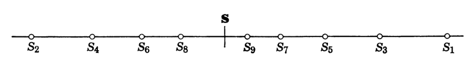

a. 基本概念
柯西收敛准则。 设无穷级数的「通项」是 an，这个级数可写为
a1+a2+⋯=ν=1∑∞aν.右端用求和号，不过是左端的简写。若当 n 增大时，第 n 个部分和
sn=a1+a2+⋯+an=ν=1∑naν趋于极限 S=limn→∞sn，便说级数收敛，否则便说它发散。在收敛的情形，称 S 为级数的和。
原注 1（第 511 页） 为使表述形式统一，允许某些 an 为零。如果从某个指标起（即 n>N）各项全为零，就称为终止级数。
我们早已遇到许多收敛级数，如几何级数 1+q+q2+⋯ 在 ∣q∣<1 时收敛到 1/(1−q)，还有 log2 的级数、e 的级数，等等。用无穷级数的语言来说，柯西收敛准则（第一章第 75 页）如下：
级数收敛的充要条件是，当 m>n 且 m,n 足够大时，数
∣sm−sn∣=∣an+1+an+2+⋯+am∣(1)可以任意小。 换句话说，给定任意正数 ϵ，都能选定一个指标 N=N(ϵ)，使得只要 m,n>N，就有 ∣sm−sn∣<ϵ。
以 q=21 的几何级数为例，若取 ϵ=101，只须取 N=4。因为
∣sm−sn∣=2n1+⋯+2m−11=2n−11(21+221+⋯+2m−n1)<2n−11,而 n>4 时 1/2n−1<1/10。若取 ϵ=1/100，相应取 N=7 就够了，读者很容易验证。
显然，收敛的一个必要条件是 limn→∞an=0，否则在 (1) 中取 m=n+1 就不能满足准则。但这个条件远不足以保证收敛：很容易找到一些级数，尽管通项趋于零，部分和却无限增大，因而级数没有和。
例。 级数 1+1/2+1/3+⋯+1/n+⋯ 的通项是 1/n。立即可见，n>1 时
sn>n1+⋯+n1=nn=n.第 n 个部分和随 n 增大而无限增大，故级数发散。
经典的调和级数 1+21+31+⋯+n1+⋯ 也是如此。这里
an+1+⋯+a2n=n+11+⋯+2n1≥2n1+⋯+2n1=21.n 与 m=2n 可以同时任意大，因此柯西准则不满足，级数发散。事实上，各项皆正，所以部分和趋于无穷大。若使同一列数正负相间，
1−21+31−41+51−⋯+n(−1)n−1+⋯,级数却收敛，而且和是 log2［第五章第 443 页 (4)］。
并非每一个发散级数的部分和都趋于 +∞ 或 −∞。例如 1−1+1−1+1−⋯ 的部分和交替取 1 和 0；由于来回振荡，既不趋于确定的极限，绝对值也不无限增大。
下面的事实虽然一目了然，却很重要：增添或删去有限项，不影响级数的收敛或发散。 单就敛散性而言，级数从 a0、a1、a5 或任意指定的一项开始，毫无区别。
b. 绝对收敛与条件收敛
调和级数发散，而隔项变号便得到收敛于 log2 的级数。几何级数的情形却不同：若 0≤q<1，则 1−q+q2−q3+⋯ 收敛，和为 1/(1+q)；把符号全改为正号，1+q+q2+q3+⋯ 也收敛，和为 1/(1−q)。
这里的区别值得细究。正项级数只有两种可能：或者收敛，或者部分和无限增大。因为部分和单调递增，只要有界就一定收敛。各项趋于零足够快，级数就收敛；若根本不趋于零，或趋于零太慢，就发散。对于正负项兼有的级数，正项所引起的部分和增长可能受到负项的补偿，正负相消的结果仍能趋于确定的极限。
为了看清这些可能性，把 ∑ν=1∞aν 与各项全取绝对值得到的级数 ∣a1∣+∣a2∣+⋯=∑ν=1∞∣aν∣ 比较。若后者收敛，则 m>n 且 n 足够大时，∣an+1∣+⋯+∣am∣ 可以任意小。又因
∣an+1+⋯+am∣≤∣an+1∣+⋯+∣am∣,左端也可以任意小。由柯西准则，原级数收敛。这时称原级数绝对收敛，它的收敛由各项绝对值的大小所保证，与符号变换无关。如果绝对值级数发散，原级数却仍收敛，就称原级数条件收敛。条件收敛有赖于正负项的抵消。
莱布尼茨判别法。 判断条件收敛时，以下判别法常常很有用：若级数各项符号交替，且绝对值 ∣an∣ 单调趋于零，则 ∑ν=1∞aν 收敛。 例如第 445 页 (7) 的莱布尼茨级数。
证明时不妨设 a1>0，把级数写成 b1−b2+b3−b4+⋯，其中 bn>0、bn→0、bn+1≤bn。用下面两种方式加括号：
b1−(b2−b3)−(b4−b5)−⋯,(b1−b2)+(b3−b4)+(b5−b6)+⋯.立即看出部分和 sn=∑ν=1naν 满足
s1≥s3≥s5≥⋯≥s2n+1≥⋯,s2≤s4≤s6≤⋯≤s2n≤⋯.另一方面，s2n≤s2n+1≤s1，又有 s2n+1≥s2n≥s2。所以奇数部分和递减而不低于 s2，有极限 L（第 73 页）；偶数部分和递增而不超过 s1，也有极限 L′。s2n+1 与 s2n 只差 b2n+1→0，故 L=L′。奇偶两列部分和趋于同一个数 S（图 7.1），这就证明了级数收敛，且其和为 S。

图 7.1 交错级数的收敛。
*阿贝尔判别法。 下列判别法包括莱布尼茨判别法作为特例。设级数 a1+a2+⋯ 的部分和 sn=a1+⋯+an 有一个与 n 无关的界，又设正数列 p1,p2,… 单调趋于零，则
p1a1+p2a2+⋯=ν=1∑∞pνaν(2)收敛。取 a1+a2+⋯=1−1+1−1+⋯，便是莱布尼茨判别法，即 p1−p2+p3−⋯ 收敛。为证一般情形，用「分部求和」作如下估计，随后应用柯西准则。若 ∣si∣≤M，则
∣pn+1an+1+⋯+pmam∣=∣pn+1(sn+1−sn)+⋯+pm(sm−sm−1)∣=−pn+1sn+pmsm+j=n+1∑m−1(pj−pj+1)sj≤pn+1M+pmM+(pn+1−pn+2+⋯+pm−1−pm)M=2pn+1M.因 pn+1→0，故 (2) 收敛。
译者注 现在许多教材把上面这个「部分和有界、权数单调趋于零」的结论称为狄利克雷判别法。这里保留原书的命名。分部求和的关键是把 aj 写成 sj−sj−1，使各差 pj−pj+1 的和只剩两个边界项。
*关于绝对收敛与条件收敛的根本区别，最后再说一点。设 ∑ν=1∞aν 收敛，依次记正项为 p1,p2,…，负项为 −q1,−q2,…。第 n 个部分和中设有 n′ 个正项、n′′ 个负项，略去零项后 n′+n′′=n。若正负项都无限多，则 n 增大时 n′,n′′ 都无限增大。显然
sn=ν=1∑n′pν−ν=1∑n′′qν.若原级数绝对收敛，∑pν 和 ∑qν 必都收敛：两者的部分和均单调不减，且以 ∑ν=1∞∣aν∣ 为上界。因此绝对收敛级数的和等于正项的和加上负项的和，也就是两个正项级数之差。 令 n→∞，由上式即可推出。一种符号的项只有有限多个时，论证相应简化。
反过来，若级数条件收敛，则 ∑pν 和 ∑qν 必都发散。若都收敛，原级数便绝对收敛，与假设矛盾；若只一个发散，例如 ∑pν 发散，那么 sn 中的第一项无限增大，第二项却趋于确定的极限，sn 也必无限增大。可见，条件收敛级数无法写成由其正项与负项绝对值组成的两个收敛级数之差。下面谈谈与此密切相关的另一个区别。
*c. 项的重排
有限和具有这样的性质：各项的次序可以任意调换，和的值不变。对于无穷级数，改变项的顺序究竟是什么意思？重排能否仍使和保持不变？有限和可以倒过来相加，无穷级数却没有最后一项可供起头。因此，所谓把 a1+a2+a3+⋯ 重排为 b1+b2+b3+⋯，只能是指前者的每一项在后者中恰好出现一次，反过来也一样。一项 an 移动的距离可以随 n 无界增大，只要它在新级数中终究会出现。某些项移到后面，当然就有别的项移到前面。例如
1+q+q2+q4+q3+q8+q7+q6+q5+q16+⋯是几何级数 1+q+q2+⋯ 的重排。
原注 1（第 518 页） 对每个 n>0，把满足 2n<k≤2n+1 的各项 qk 逆序写出。
就改变次序而言，绝对收敛和条件收敛有根本区别。绝对收敛级数在任意重排下仍收敛，和也不变，正如有限和一样。条件收敛级数则可以通过适当的重排把和变成任意指定的数，甚至可以使级数发散。
先证第一点。设原级数只有正项，和为 A。对每个部分和 sn=∑ν=1naν，只须 m 足够大，重排后的部分和 tm=∑ν=1mbν 就会包含 sn 的全部项，因而 tm≥sn。反过来，总能找一个足够大的 n′，使原来的部分和 sn′ 包含 b1,…,bm，从而 tm≤sn′≤A。因此对充分大的 m 有 sn≤tm≤A，而 sn 又可任意接近 A；故重排后的级数也趋于 A。
若绝对收敛级数兼有正负项，可把它看作两个正项收敛级数的差。重排只使这两个级数分别重排，各自的和不变。对绝对值级数应用刚刚证明的正项情形，可知新级数仍绝对收敛，因此它的和仍是上述两和之差。
初学者也许觉得这一点无需证明。一个条件收敛的反例却可以说明，证明确有必要，而且绝对收敛这个条件不可或缺。写出熟悉的 log2 的级数，在下面隔项对齐写出它的 21 倍：
1−21+31−41+51−61+71−81+⋯1+21+31−41+51+61+71−81+⋯=log2,=21log2.把上下对齐的项相加，得到
1+31−21+51+71−41+91+111−61+⋯=23log2.这个级数分明只是原级数的重排，和却变成了原来的 23 倍。十八世纪的数学家习惯于对无穷级数作运算而不问收敛性，这个看似矛盾的发现会给他们怎样的震动，是不难想象的。
原注 1（第 519 页） 关于级数的加法，见 §7.1d。
*尽管以后用不到这一结果，我们还是给出条件收敛级数 ∑an 可以重排成任意指定和的证明。正项 p1,p2,… 及负项的绝对值 q1,q2,… 都趋于零，因为 ∣an∣→0；同时 ∑pν、∑qν 都发散。指定任意数 a，为叙述方便设 a>0。先从头取正项，取到 ∑ν=1n1pν 首次超过 a。因正项和无界，这一定办得到；超过的数值至多为 pn1。现在加上负项 −∑ν=1m1qν，刚好使部分和落到 a 以下。因 ∑qν 发散，这也办得到，所差至多为 qm1。
再取接下来的正项 ∑ν=n1+1n2pν，刚好越过 a，超出至多 pn2；接着从上次用到的负项之后取 −∑ν=m1+1m2qν，刚好低于 a。如此继续，部分和在 a 上下来回摆动。由于 pν,qν 都趋于零，夹住振荡的区间能缩得任意窄，从而部分和趋于 a。定理得证。同样可以使级数发散，只须每次取的正项相对负项足够多，使负项再也补偿不了正项的增长。
d. 无穷级数的运算
两个收敛级数 a1+a2+⋯=S 和 b1+b2+⋯=T 显然可以逐项相加。也就是说，取 cn=an+bn，则新级数收敛于 S+T，因为
ν=1∑ncν=ν=1∑naν+ν=1∑nbν⟶S+T.同样，收敛级数的每一项同乘一个因子，所得级数仍收敛，和也乘上同一因子。
原注 1（第 520 页） 这个定理其实就是第一章第 72 页所说的事实：两个量之和的极限等于它们各自极限之和。
这些运算都不受绝对收敛或条件收敛之别的影响。乘法却不同。若把两个无穷级数像有限和那样相乘，则所得级数未必收敛到两和的乘积；有一个充分条件是，其中至少一个级数绝对收敛（见附录第 555 页）。